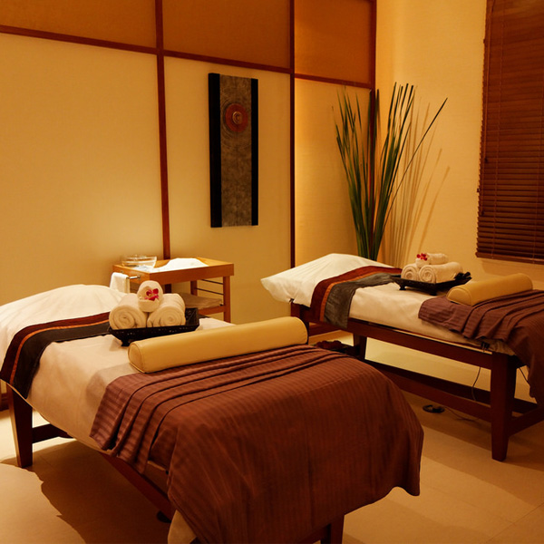
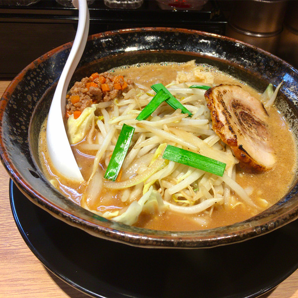

Mall Info
ジャカルタ中心部、BANK INDONESIA（インドネシア銀行）や日本大使館が建ち並ぶジャランタムリン（タムリン通り）に、タムリンモールは都市整備事業の一環として建設され2003年にオープンしました。
ジャカルタの伝統と近年のめざましい発展とを背景に、より多くのお客様に愛される独自のモール作りを行っています。
Shop Info

Kukeko Reflexology
| フロア情報 | 2階 ビューティフロア |
|---|---|
| 営業時間 | 10:00 ～ 21:00 |
COMMENT
市内に数店舗あるマッサージのチェーン店です。「カキク」という名前の響きと、足のイラスト入り看板がとっても印象に残ります。女性でも入りやすい雰囲気のお店で、料金もチップなしの明朗会計。
一番の人気プランは1時間コース、エステがセットになった「グッドフェイスマッサージ」。あなたの表情筋をほぐし、1歳若返らせます。
2度目以降ののサービス利用時には割引をう受けることが出来ます。

ピリ辛端面 Piri Pri
| フロア情報 | 1階 レストランフロア |
|---|---|
| 営業時間 | 10:00 ～ 22:00（L.O. 22:30） |
COMMENT
精肉店を営んでいたオーナーが10年の歳月を経てオープンした本格ステーキハウスです。ステーキ用牛肉はすべてA-5クラスを使用、オーナー自ら独自のルートで買い付けています。
当店自慢のステーキソースは、ニンジン、タマネギ、セロリなどの有機野菜を3日間煮込んでから晒しで漉し、さらにひと味加えてから一晩煮込んで作るオリジナルソースです。隠し味には、小豆島産の大豆を原料に使った希少な溜まり醤油も使われています。
少人数の宴会から30名様までのパーティまでご利用いただけますのでお気軽にご相談ください。